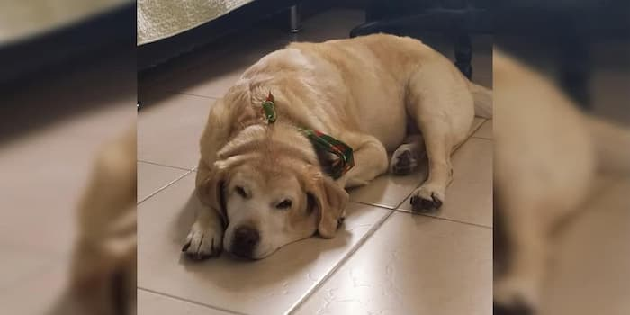
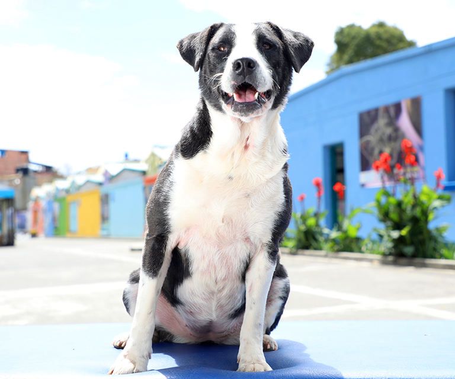
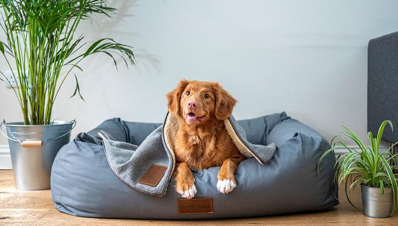
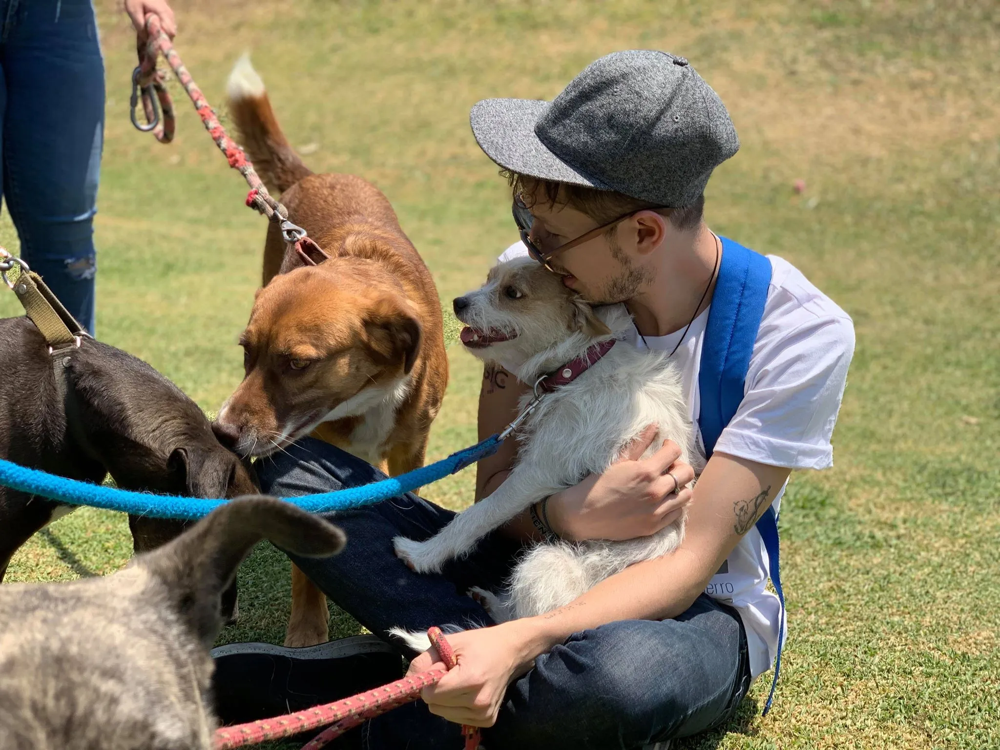
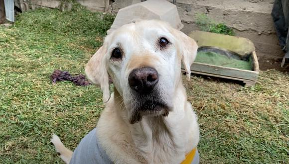
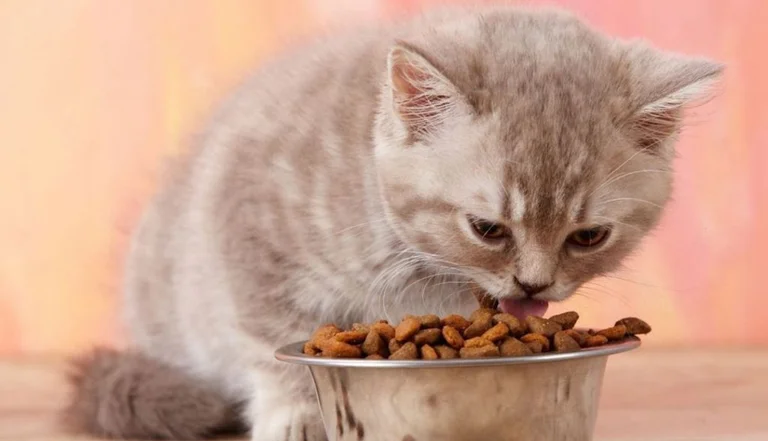

Así puede ayudar en la donatón a favor de 4000 animales en Medellín
Fuente: Periódico El Tiempo.

Urgencias veterinarias, entre los programas del Instituto de Protección y Bienestar Animal
Fuente: Periódico La República.

WUF: ¿Qué cosas no te pueden faltar en casa si vas a adoptar una mascota?
Fuente: Periódico El Comercio

Busco un perro: ¿es mejor adoptar o comprar?
Fuente: CNN Español

Pijamada WUF: el programa que te permite darle un hogar temporal a un perro mayor
Fuente: Periódico El Comercio
